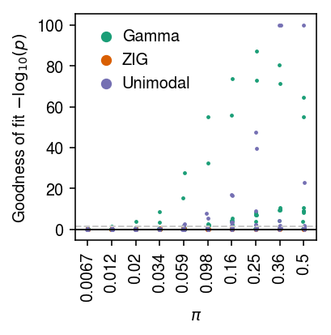

Goodness of fit of deconvolved distributions
Table of Contents
Introduction
We previously estimated the out-of-sample log likelihood as a measure of the generalization performance of distribution deconvolution methods for scRNA-seq. However, this is not the simplest way to support some of our key results:
- For most genes, in most data sets, a Gamma assumption appears sufficient (meaning, more complicated distributional assumptions do not have better generalization performance).
- When Gamma is insufficient, it is generally not the case that assuming a point mass on zero improves generalization (meaning, departures from Gamma do not involve excess zeros).
Here, we directly test for the goodness of fit of the estimated distribution (as in Sarkar et al. 2019).
Setup
import numpy as np import pandas as pd import scmodes
import scipy.special as sp import scqtl
%matplotlib inline %config InlineBackend.figure_formats = set(['retina'])
import matplotlib.pyplot as plt plt.rcParams['figure.facecolor'] = 'w' plt.rcParams['font.family'] = 'Nimbus Sans'
Methods
Test for goodness of fit
The key idea underlying our test for goodness of fit is the fact that if \(x_{i} \sim F(\cdot)\), then \(F(x_{i}) \sim \operatorname{Uniform}(0, 1)\). To test for goodness of fit of an estimated \(\hat{F}\) to the data \(x_{1}, \ldots, x_{n}\), we apply the Kolmogorov-Smirnov (KS) test to test whether the values \(\hat{F}(x_1), \ldots, \hat{F}(x_n)\) are uniformly distributed. (This test is slightly conservative because it uses the same data to estimate \(\hat{F}\).)
Here, we have to modify this simple procedure to account for the fact that our data are discrete counts, so \(F\) is not continuous. To address this issue, we used randomized quantiles (Dunn 1996): we sample one random value per observation \(u_{i} \mid x_{i} \sim \mathrm{Uniform}(\hat{F}(x_i - 1), \hat{F}(x_i))\). These have the property that if \(x_i \sim F\) then \(u_i \sim \mathrm{Uniform}(0, 1)\).
In our model, each observed UMI count \(x_{i}\) comes from a different distribution \(F_{i}\):
\[ F_i(x_i) = \sum_{k=0}^{x_i} \int_0^\infty \operatorname{Poisson}(k; s_i \lambda_i) g(d\lambda_i) \]
We therefore draw \(u_{i} \mid x_{i} \sim \mathrm{Uniform}(\hat{F}_{i}(x_{i} - 1), \hat{F}_{i}(x_{i}))\). Then, we apply the KS test to whether the randomized quantiles \(u_{i}\) are uniformly distributed.
Data
def _cd8_cd19_mix(): t_cells = scmodes.dataset.read_10x('/project2/mstephens/aksarkar/projects/singlecell-ideas/data/10xgenomics/cytotoxic_t/filtered_matrices_mex/hg19/', return_df=True, min_detect=0) b_cells = scmodes.dataset.read_10x('/project2/mstephens/aksarkar/projects/singlecell-ideas/data/10xgenomics/b_cells/filtered_matrices_mex/hg19/', return_df=True, min_detect=0) return scmodes.dataset.synthetic_mix(t_cells, b_cells, min_detect=0.25)[0] def _cyto_naive_mix(): cyto = scmodes.dataset.read_10x(prefix='/project2/mstephens/aksarkar/projects/singlecell-ideas/data/10xgenomics/cytotoxic_t/filtered_matrices_mex/hg19', return_df=True, min_detect=0) naive = scmodes.dataset.read_10x(prefix='/project2/mstephens/aksarkar/projects/singlecell-ideas/data/10xgenomics/naive_t/filtered_matrices_mex/hg19', return_df=True, min_detect=0) return scmodes.dataset.synthetic_mix(cyto, naive, min_detect=0.25)[0] data = { 'cytotoxic_t': lambda: scmodes.dataset.read_10x('/project2/mstephens/aksarkar/projects/singlecell-ideas/data/10xgenomics/cytotoxic_t/filtered_matrices_mex/hg19/', return_df=True), 'b_cells': lambda: scmodes.dataset.read_10x('/project2/mstephens/aksarkar/projects/singlecell-ideas/data/10xgenomics/b_cells/filtered_matrices_mex/hg19/', return_df=True), 'ipsc': lambda: scmodes.dataset.ipsc('/project2/mstephens/aksarkar/projects/singlecell-qtl/data/', n=100, return_df=True), 'cytotoxic_t-b_cells': _cd8_cd19_mix, 'cytotoxic_t-naive_t': _cyto_naive_mix, 'pbmcs_68k': lambda: scmodes.dataset.read_10x('/project2/mstephens/aksarkar/projects/singlecell-ideas/data/10xgenomics/fresh_68k_pbmc_donor_a/filtered_matrices_mex/hg19', return_df=True), }
Results
Simulation
Draw data following the Poisson-point Gamma distribution:
\begin{align*} x_i &\sim \operatorname{Poisson}(s_i \lambda_i)\\ \lambda_i &\sim \pi \delta_0(\cdot) + (1 - \pi) \operatorname{Gamma}(1/\phi, 1/(\mu\phi)) \end{align*}Draw simulation parameters \(s_i=10^5, \ln\mu, \ln\phi\) from typical values (Sarkar et al. 2019).
\begin{align*} \ln\mu &\sim \operatorname{Uniform}(-12, -8)\\ \ln\phi &\sim \operatorname{Uniform}(-6, 0) \end{align*}Then, test for goodness of fit of Poisson-Gamma and Poisson-point Gamma.
import scmodes.benchmark.gof def trial(num_samples, logodds, seed, verbose=False): data, _ = scqtl.simulation.simulate(num_samples=num_samples, logodds=logodds, seed=seed) x = data[:,0] s = data[:,1] # Important: scqtl.simple returns mu, 1/phi fit0 = scqtl.simple.fit_nb(x, s) res0 = scmodes.benchmark.gof._gof(x, cdf=scmodes.benchmark.gof._zig_cdf, pmf=scmodes.benchmark.gof._zig_pmf, size=s, log_mu=np.log(fit0[0]), log_phi=-np.log(fit0[1])) fit1 = scqtl.simple.fit_zinb(x, s) res1 = scmodes.benchmark.gof._gof(x, cdf=scmodes.benchmark.gof._zig_cdf, pmf=scmodes.benchmark.gof._zig_pmf, size=s, log_mu=np.log(fit1[0]), log_phi=-np.log(fit1[1]), logodds=fit1[2]) if verbose: print(fit0, fit1) return res0[1], res1[1] def evaluate(num_samples, num_trials): result = [] for logodds in np.linspace(-5, 0, 10): for seed in range(num_trials): gamma_res, zig_res = trial(num_samples, logodds, seed) result.append([logodds, seed, gamma_res, zig_res]) result = pd.DataFrame(result) result.columns = ['logodds', 'trial', 'gamma', 'zig'] return result
Run the simulation.
sim_res = evaluate(num_samples=1000, num_trials=10)
Plot the results.
cm = plt.get_cmap('Dark2') plt.clf() plt.gcf().set_size_inches(3, 3) for i, (k, l) in enumerate(zip(['gamma', 'zig'], ['Gamma', 'ZIG'])): jitter = np.random.normal(scale=0.01, size=sim_res.shape[0]) plt.scatter(sim_res['logodds'] + jitter, -np.log10(sim_res[k]), s=2, c=np.atleast_2d(cm(i)), label=l) plt.axhline(y=0, c='k', lw=1) plt.axhline(y=-np.log10(.05 / sim_res.shape[0]), c='0.8', ls=':', lw=1) plt.legend(frameon=False, handletextpad=0, markerscale=4) plt.xticks(np.linspace(-5, 0, 10), [f'{x:.2g}' for x in sp.expit(np.linspace(-5, 0, 10))], rotation=90) plt.xlabel('$\pi$') plt.ylabel('Goodness of fit $-\log_{10}(p)$') plt.tight_layout()

Test for goodness of fit
Run the GPU-based methods.
sbatch --partition=gpu2 --gres=gpu:1 --mem=16G --time=4:00:00 -a 1-5 #!/bin/bash source activate scmodes python <<EOF <<imports>> import os <<data>> tasks = list(data.keys()) task = tasks[int(os.environ['SLURM_ARRAY_TASK_ID'])] x = data[task]() res = scmodes.benchmark.evaluate_gof(x, methods=['gamma', 'zig']) res.to_csv(f'/scratch/midway2/aksarkar/modes/gof/{task}-gpu.txt.gz', compression='gzip', sep='\t') EOF
Run the CPU methods
sbatch --partition=broadwl -n1 -c28 --exclusive --time=12:00:00 -a 0 #!/bin/bash source activate scmodes python <<EOF <<imports>> import multiprocessing as mp import os <<data>> tasks = list(data.keys()) task = tasks[int(os.environ['SLURM_ARRAY_TASK_ID'])] with mp.Pool(maxtasksperchild=20) as pool: # Important: this needs to be done after initializing the pool to avoid # memory duplication x = data[task]() res = scmodes.benchmark.evaluate_gof(x, pool=pool, methods=['unimodal']) res.index = x.columns res.to_csv(f'/scratch/midway2/aksarkar/modes/gof/{task}-unimodal.txt.gz', compression='gzip', sep='\t') EOF
Move the results to permanent storage.
rsync -au /scratch/midway2/aksarkar/modes/gof/ /project2/mstephens/aksarkar/projects/singlecell-modes/data/gof/
Read the results.
gof_res = (pd.concat([pd.read_csv(f'/project2/mstephens/aksarkar/projects/singlecell-modes/data/gof/{k}-gpu.txt.gz', sep='\t', index_col=0) for k in data], keys=data.keys()) .reset_index(level=0) .rename({'level_0': 'dataset'}, axis='columns'))
Plot the histogram of goodness of fit test \(p\)-values for the fitted Gamma distribution.
plt.clf() fig, ax = plt.subplots(2, 3, sharex=True) fig.set_size_inches(6, 4) for a, t, (k, g) in zip(ax.ravel(), ['T cell', 'B cell', 'iPSC', 'T cell/B cell', 'Cytotoxic/naive T', 'PBMC'], gof_res.groupby('dataset')): a.hist(g.loc[g['method'] == 'gamma', 'p'], bins=10, color='0.7', density=True) a.axhline(y=1, c='k', ls=':', lw=1) a.set_xlim([0, 1]) a.set_title(t) for a in ax: a[0].set_ylabel('Density') for a in ax.T: a[-1].set_xlabel('$p$-value') fig.tight_layout()

Plot the histogram of goodness of fit test \(p\)-values for the fitted point-Gamma distribution.
plt.clf() fig, ax = plt.subplots(2, 3, sharex=True) fig.set_size_inches(6, 4) for a, t, (k, g) in zip(ax.ravel(), ['T cell', 'B cell', 'iPSC', 'T cell/B cell', 'Cytotoxic/naive T', 'PBMC'], gof_res.groupby('dataset')): a.hist(g.loc[g['method'] == 'zig', 'p'], bins=10, color='0.7', density=True) a.axhline(y=1, c='k', ls=':', lw=1) a.set_xlim([0, 1]) a.set_title(t) for a in ax: a[0].set_ylabel('Density') for a in ax.T: a[-1].set_xlabel('$p$-value') fig.tight_layout()

Report the number of genes which depart from the null that the data for the gene follows the fitted distribution (after Bonferroni correction at level 0.05).
gof_res.groupby(['dataset', 'method']).apply(lambda x: (x['p'] < 0.05 / x.shape[0]).sum()).reset_index().pivot(index='dataset', columns='method')
0 method gamma zig dataset b_cells 12 10 cytotoxic_t 7 6 cytotoxic_t-b_cells 35 24 cytotoxic_t-naive_t 29 28 ipsc 2 2 pbmcs_68k 108 109
Report the fraction of genes which depart from the null that the data for the gene follows the fitted distribution (after Bonferroni correction at level 0.05).
gof_res.groupby(['dataset', 'method']).apply(lambda x: (x['p'] < 0.05 / x.shape[0]).mean()).reset_index().pivot(index='dataset', columns='method')
0 method gamma zig dataset b_cells 0.032000 0.026667 cytotoxic_t 0.015184 0.013015 cytotoxic_t-b_cells 0.086634 0.059406 cytotoxic_t-naive_t 0.069212 0.066826 ipsc 0.037736 0.037736 pbmcs_68k 0.267327 0.269802
Remark We previously fit point-Gamma distributions to the iPSC data (Sarkar et al. 2019), and reported:
We tested the goodness of fit for each individual and each gene, and rejected the null that the model fit the data for only 60 of 537,658 individual-gene combinations (0.01%) after Bonferroni correction (\(p < 9 \times 10^{−8}\))
The key difference between the approach taken here and the previous result is that here we do not account for the fact that the cells are derived from multiple donors. The differing genetic backgrounds of the donor individuals means both the mean and variance of gene expression vary, such that the marginal distribution is not well-described by a single Gamma distribution.